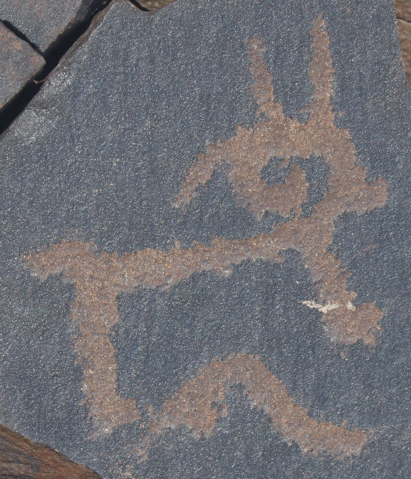
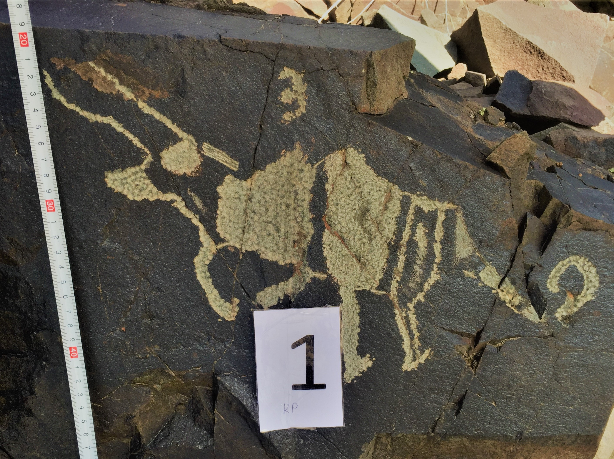
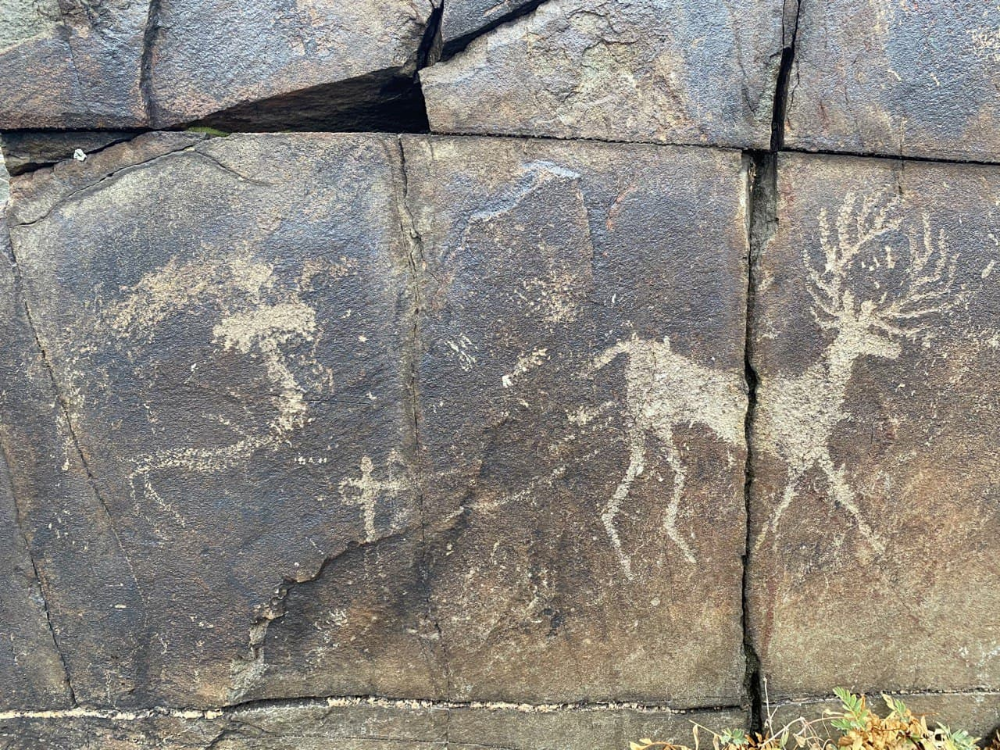
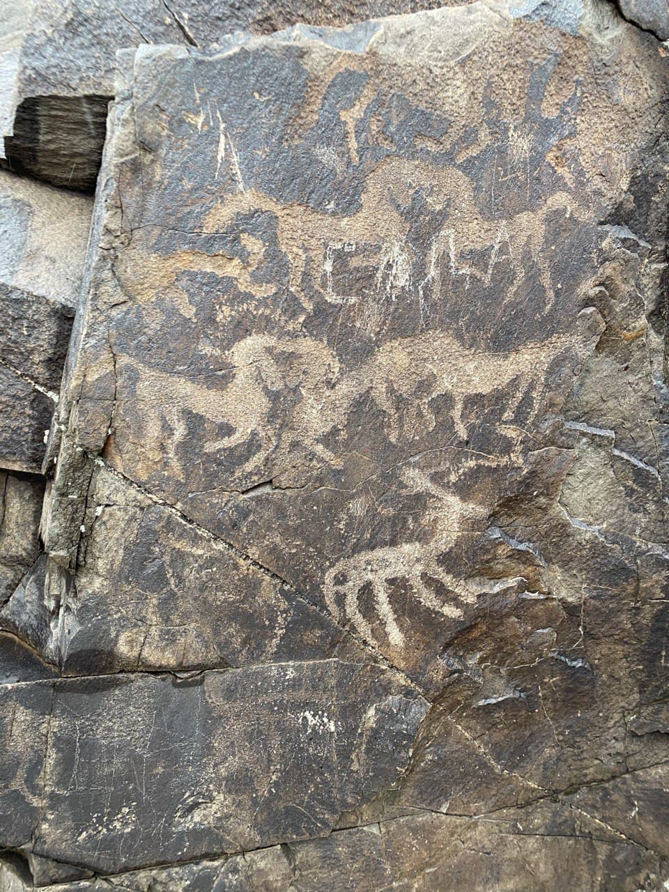

Местность Ботамойнак
Местность Ботамойнак находится в 15 км к юго-востоку от аула Акбулым,
Жамбылского района, Жамбылской области. Эта местность расположена на
юго-западной оконечности, в предгорьях Западного Тянь-Шаня, на высоте
1000-1200м над уровнем моря. Местность Ботамойнак, где располагаются
наскальные рисунки, представляет собой ряд не высоких гор, отделенных
друг от друга ложбинками и саями. Археологический ландшафт охватывает
массив в виде квадрата предгорий и коротких горных долин (примерно 15
х 15 км). Площадь этой зоны более 5,4 кв. км. с учетом горного
коэффициента.
Интерпретация петроглифов местности Ботамойнак
| Вид петроглифа | Интерпретация | Фото |
|---|---|---|
| Козёл | Большую долю всех петроглифов Ботамойнак занимают козлы .Все они примерно имеют одинаковое изображение: дугообразные рога, завернутые над туловищем, П-образное тело, хвост и характерная физиономия. Отличаются они тем, что имеют разные роли в разных сюжетах, позиции и количество. |  |
| Верблюд | В местности можно встретить немало рисунков верблюда. Двугорбые животные, с четырьмя длинными конечностями, тонким, коротким хвостом, длинной шеей, покрытой толстым слоем меха и вытянутым черепом. В большинстве случаев изображения верблюдов сопровождаются людьми, держащих их на поводу. Однако, есть и дикие верблюды. Отличаются все рисунки друг от друга композицией, качеством рисования и количеством. |

|
| Бык | В таблице есть несколько петроглифов с быками, один из которых дикий, рисунок 35. Это можно понять по его рогам, которые были длиннее, чем у остальных, так же широкое и большое туловище с изогнутым хвостом и видно, что он бежит. А одомашненные быки имеют дугообразные и короткие рога, прямой хвост и они, в большинстве случаев, в стоячем положении. |  |
| Венценосный Олень | Олени имеют большой семантический смысл и занимают важную часть в понимании мира у древних людей. У них они ассоциировались с солярной системой, с солнцем. Показывалось это тем, что изображали округлые рога, ветвящиеся в стороны. Не осталось без внимания гипертрофированность животных, что показывает их значимость у древних предков |  |
| Лошади | Лошадей можно встретить в разные моменты. В одних они оседланы людьми, в некоторых представлены как стадо. Вдобавок, есть интересная композиция, где много лошадей стоит попарно в один столб. |  |
| Люди | Люди, хоть и малы количеством, играют разнообразные роли в сюжетах композиции. Например, на одном из петроглифов один человек стоит и смотрит на стадо козлов и скорее всего это пастух. Или на сразу нескольких петроглифах они изображены в виде охотников. |

|
Маршрут прохождения в местности Ботамойнак
Расположение петроглифов в местности Ботамойнак
Чтобы открыть страницу с приложением перейдите по следующей ссылке внизу
Открыть веб-приложение